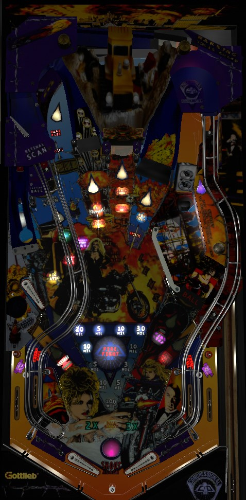

Most of the scoring in Barb Wire comes from main modes. To play main modes, bash Big Fatso's briefcase up the middle until it lifts up, then shoot the hole behind it. Most main modes are multiballs that can be boiled down to "keep 2+ balls in play and shoot what's flashing". Haywire wizard mode is extremely lucrative, and very attainable since there are only 4 main modes in front of it. After playing Haywire once, either try to make it back to Haywire again, or focus on playing Hideout main mode, which awards Double Your Score when completed.
The below picture of the Barb Wire playfield was taken from the VPX recreation by Aubrel.
To play for the skill shot, you must make a full plunge, which drops the ball on the left flipper. Shoot the Big Fatso hole up the middle to score the skill shot; this awards one Haywire letter, which serves as progress toward qualifying the game's wizard mode. A successful skill shot does not score any points beyond the 300,000 that you get for a normal Big Fatso hole shot. Short plunging (which causes the ball to come down the right side of the game and be kicked out of the Mind Read hole in the lower right) or hitting any other switch on the way to Big Fatso results in a failed skill shot.
When no main mode or multiball is running, shoot the briefcase in front of Big Fatso to qualify a main mode. At the start of the game, it only takes 1 briefcase shot to qualify each mode; this number increases by 1 for each time Spell Haywire mini-wizard mode has been played. Shots to Big Fatso's briefcase usually do not count toward qualifying a mode if the white arrow pointing at the briefcase is flashing, which indicates that either an Arrow Award or a Multiplier is ready (see Triangle awards, below). When the requisite number of shots to Big Fatso's briefcase have been made, the briefcase will raise up, exposing the center hole for about 20 seconds; shoot this hole to start the currently flashing mode. Pop bumpers and slingshots rotate which mode is flashing. Modes that have already been played are solidly lit.
Unless specified otherwise, each main mode is a multiball. In general, multiball modes start with 2 balls in play (can be adjusted up to 3), and shooting the left ramp can add a ball to the playfield (there can be 0, 1, or 2 add-a-balls available, based on game settings). All multiball modes start with a generous amount of unlimited ball save- seemingly 20-30 seconds. Multiball modes last until there is just one ball left in play. The 4 main modes are:
After the 4 main modes listed above are played, the 5th mode to be played is Spell Haywire. This is another multiball mode. Two shots at a time have their white arrows lit, and the lit shots move every few seconds. Making a lit shot scores a letter in Haywire. Draining back to single ball play ends the mode and resets the main mode progress, so you'll have to play the 4 original modes again to have another chance at Spell Haywire. If you do complete the spelling of Haywire, you instantly advance to Haywire wizard mode.
In addition to the Spell Haywire round, Haywire letters can be earned from Retinal Scan mystery awards or successful Skill Shots. As soon as you collect the E in Haywire- regardless of whether or not it was from the Spell Haywire round- Haywire wizard mode will begin. (The game may spot you up to 3 letters in Haywire for you at the beginning of the game, making the first Haywire wizard mode even easier to reach.) Haywire is a 4-ball multiball with an even more generous ball saver than the other multiball modes- at least 30 seconds, probably closer to 45 or 60, though the round is so chaotic that I have not timed it myself. The Haywire Bonus starts at 100,000,000 points. Every switch in the game except for the pop bumpers adds 20,000,000 points to the Haywire Bonus. When the Haywire Bonus is maxed out at 990,000,000 points, the Big Fatso scoop opens; shoot it to collect and reset the Haywire Bonus so you can do it all again. When single ball play resumes, Big Fatso will open, and you'll have 20 seconds to collect the Haywire Bonus one final time before the wizard mode officially ends, no matter what the Haywire Bonus value is. When Haywire concludes, all Haywire Letters are reset, and you'll have to collect all 7 letters again to return to the wizard mode.
In the center of the playfield near the slingshots is a large triangle, displaying various values from 3,000,000 to 100,000,000 points. Shooting any shot with a flashing white arrow when no mode or multiball is running scores the flashing value times the current Game Multiplier as an Arrow Award and moves the flashing value one position clockwise. Making a flashing arrow shot lights it solidly. When all 8 arrow shots are lit in this way, Big Fatso will open; shoot inside to advance the current Game Multiplier. At the start of the game, all 8 arrows shots are flashing and can be made in any order; this decreases to 4, then 2, then 1 flashing arrow shot available at a time after each Game Multiplier that is earned from a complete set of arrow shots. The Game Multiplier can also be advanced as an award from the Retinal Scan mystery. Game Multiplier maxes out at 3x, and also applies to the Toll Bonus scored at the end of the ball in addition to any Arrow Awards earned. The Retinal Scan mystery can also give Award Triangle Value, which causes the flashing light to rotate clockwise until it reaches a value that is not already lit, then scores and lights that value. Lighting all 11 values on the Triangle instantly starts Fire Fight Multiball.
Fire Fight Multiball is a 3-ball multiball. 3 shots will be lit at any given time; lit shots can be any of the 8 arrow shots or any of the 4 Lens targets. Making any lit shot scores the current Jackpot value. The jackpot value starts each ball at 30,000,000 points and increases by 10,000,000 every time a 2-way combo is made (described in more detail below); as far as I know, there is no way to raise the Jackpot during Fire Fight Multiball itself. Normal play resumes when there is only 1 ball left on the playfield. Since Arrow Awards cannot be earned during main modes in any way, there is no way to stack this multiball with any other.
Any shot to the left orbit when no mode or multiball is running will start the Barb Wire feature in the pop bumpers. Each hit of a pop bumper moves the cursor one position on the dot display. When the ball leaves the bumpers, if the cursor is pointing at an unlit letter in Barb Wire, that letter will be lit. If the cursor is pointing at an already-lit letter, nothing happens. To help ensure that the cursor earns you letters, you can press and hold both flippers to prevent the pop bumpers from moving the cursor. Lighting all 8 letters in Barb Wire scores a super jackpot, which is usually worth 300,000,000 points. Lit Barb Wire letters carry over from ball to ball, player to player, and game to game. If Barb Wire is played in Tournament Mode, this feature is completely disabled.
The Mega Bonus starts each ball at 30,000,000 points. Advancing the Mega Bonus will add an additional 30,000,000 to its value, and can be done either from a Retinal Scan mystery award or by shooting the lower right standup target. Hitting the lower right target will also cause Big Fatso's briefcase to move up and down for about 15 seconds, and Mega Bonus will be lit at Big Fatso during that time; shoot past the briefcase into Big Fatso's scoop to score the Mega Bonus.
As long as the lower right scoop is not lit for an Arrow Award, any shot that makes the scoop from below scores one Mind Read. At 6 Mind Reads, an extra ball is lit that can be moved between the in/out lanes with flipper lane change. At 12 Mind Reads, the next Retical Scan mystery award is forced to be an instant Special. The 18th and 24th Mind Reads each award a Super Jackpot. I am not sure if there are any other awards past that point.
Any shot to the Retinal Scan when no mode or multiball is running starts the Combo sequence, during which the goal is to shoot consecutive lit shots without missing.
When no mode or multiball is running, and when the left hole is not flashing for an Arrow Award, shooting the left hole gives a Retinal Scan mystery award. The award is predetermined, and can be changed by shooting the kicking target in the lower left of the game. After the kicking target has been hit, any slingshot hit for about 5 seconds will reroll the next Retinal Scan award as well. Awards I've seen include the following:
Awards that I've heard about, but not seen for myself, include:
This starts each ball at 20,000,000 points. If Crash the Tolls main mode has not yet been played this game, shots to the right ramp when no mode or multiball is running each add 5,000,000 to the Tolls bonus. This is decreased to 2,000,000 per ramp if Crash the Tolls has been played at least once. During Crash the Tolls itself, the right ramp adds 20,000,000 to the Tolls bonus. The Tolls bonus is scored every time a flashing arrow shot is made during Crash the Tolls. The Tolls bonus times the current Game Multiplier is scored at the end of each ball.
Barb Wire has a conventional in/out lane setup with a center peg between the flippers. The in/out lanes can be lit for extra ball, which is moved via flipper lane change; extra ball can be lit as a consolation at the final ball of a low-scoring game, by making 6 Mind Reads, or supposedly as an award from Retinal Scan.
The only end of ball bonus on Barb Wire is the Tolls bonus, which is multiplied by the Game Multiplier and scored at the end of each ball. See Tolls Bonus above.
If the game is set to Tournament Mode, several features are disabled. The Retinal Scan will never award Reveal Match, the Barb Wire super jackpot carryover is completely skipped, ball save at the beginning of a ball is removed (but not multiball ball save, as far as I can tell), there is no Special given for a grand champion score, and the consolation extra ball and Crash the Tolls mode are both disabled as well. In addition, Specials score 200,000,000 points and extra balls score 50,000,000 points under competition rules.
It can take 3, 5, or 7 hits to any Lens target to award the extra ball after spelling Lens during Hammerhead Bar mode. Also, the game can be set to only light 2 letters at a time for 20,000,000 points instead of all 4.
The game can spot HAY, H, or nothing toward the first Haywire wizard mode at the start of the game.
Each Mind Read award can require 6, 8, 10, 12, or 16 shots to the Mind Read scoop.
The game can be set to only award a Barb Wire letter on every other shot to the left orbit during non-mode play; by default, every shot has a chance to award a letter.
On hard settings, the 100,000,000 award on the Triangle can only be collected once, and will be skipped over once it's lit until Fire Fight Multiball is played. By default, the 100,000,000 can be collected multiple times like any other award.
On hard settings, the Jackpot starts at 20,000,000 instead of 30,000,000; raises by 5,000,000 at a time instead of 10,000,000; and the super jackpot is 200,000,000 instead of 300,000,000. Also, if this hard setting is active, Arrow Awards will not multiply their score by the current Game Multiplier, which would mean the Game Multiplier is just a regular bonus multiplier.
Hideout round can give 5 seconds for all awards or 4 seconds for all awards, instead of the default which gives 10 seconds for extra ball and 5 seconds for all others.
1, 2, or 3 arrow shots can be lit during Spell Haywire and Fire Fight Multiball. Default is 2 at a time in Spell Haywire and 3 at a time in Fire Fight Multiball.
The game tracks how much score you earn on each individual ball in play, and awards a Special and a chance to enter your initials if you set a new single-ball high score.
| If you need... | Try... |
| 100,000,000 points | ...shooting Retinal Scan a couple times, starting a main mode, or scoring a Mega Bonus. |
| 200,000,000 points | ...making several shots in a main mode, or aiming for flashing arrow shots for the purposes of completing the Triangle. |
| 500,000,000 points | ...playing through a couple main modes. Since most main modes are multiballs, your mileage may vary, but you'll likely have at least one good mode out of the three multiball modes. |
| 1,000,000,000 points | ...playing as many modes as you can to get to Haywire and earning at least one Haywire Bonus. |
| 2,000,000,000 points | ...really making sure you can keep a multiball alive. You'll need to do well on multiple multiball modes and a Haywire run to get this score reasonably. |
| 4,000,000,000 points or more | ...earning a whole lot of 990,000,000-point awards from Haywire, or collecting one or two Haywire Awards followed by using Hideout mode to double your score. |